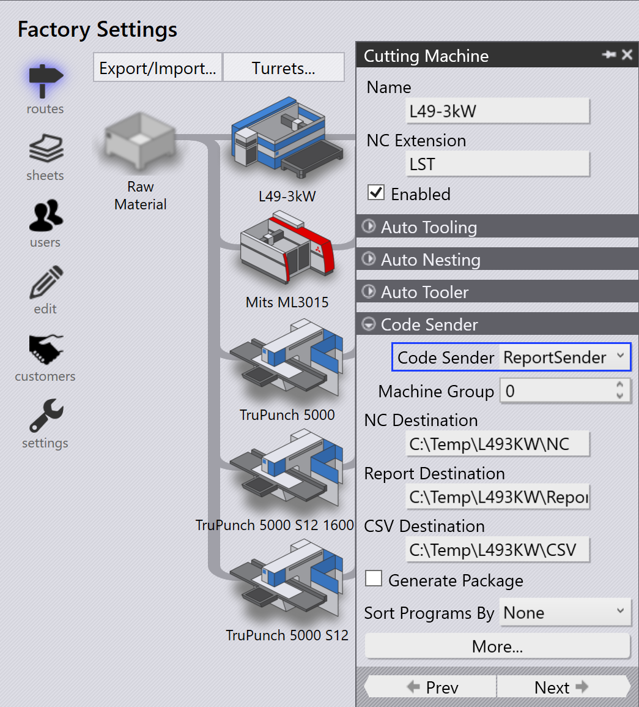
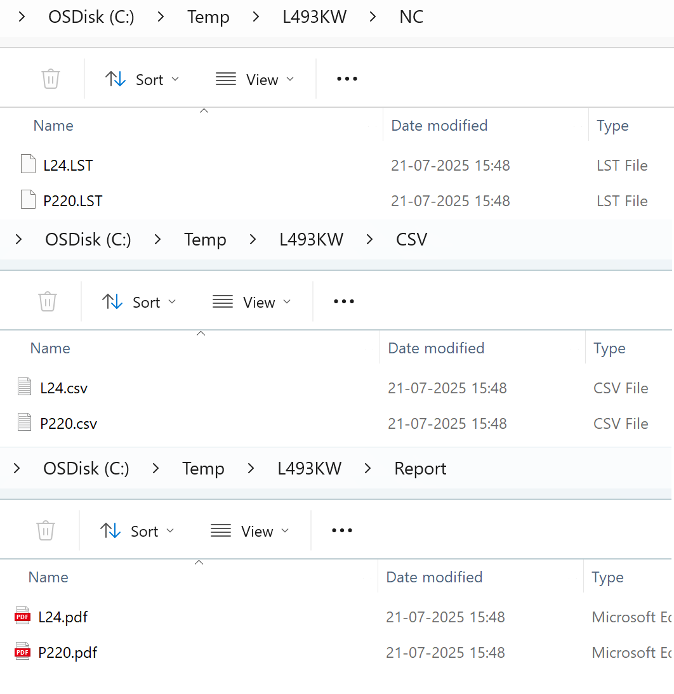

Αποστολέας αναφοράς
-
Από προεπιλογή, όταν μια Τοποθέτηση στέλνεται στο μηχάνημα, όλα τα αρχεία εξόδου (NC, Report και CSV) αποθηκεύονται σε φάκελο με το όνομα της Τοποθέτησης.
-
Αντί να στείλετε όλη την έξοδο στον φάκελο Τοποθέτησης, μπορείτε να εξαγάγετε τα αρχεία NC, Report και CSV σε συγκεκριμένους φακέλους χρησιμοποιώντας τον Αποστολέα Αναφοράς.
-
Για να το ρυθμίσετε αυτό, πηγαίνετε στο εργοστασιακές → διαδρομές → Code sender και επιλέξτε ReportSender.
-
Ορίστε τους φακέλους προορισμού για αρχεία NC, αρχεία Report και αρχεία CSV.

-
Όταν γίνει Αποστολή στη μηχανή… για μια Τοποθέτηση, τα αρχεία NC, Report και CSV εξάγονται στους ρυθμισμένους φακέλους αντί του προεπιλεγμένου φακέλου Τοποθέτησης.
-
Όταν γίνει Ανάκληση από τη μηχανή… για μια Τοποθέτηση, τα αντίστοιχα αρχεία NC, Report και CSV αφαιρούνται από τους ρυθμισμένους φακέλους προορισμού Αποστολέα Αναφοράς.
-
Αυτό διασφαλίζει ότι μόνο έγκυρα αρχεία παραμένουν στους φακέλους εξόδου και διευκολύνει τη διαχείριση των εξαγόμενων αρχείων.
